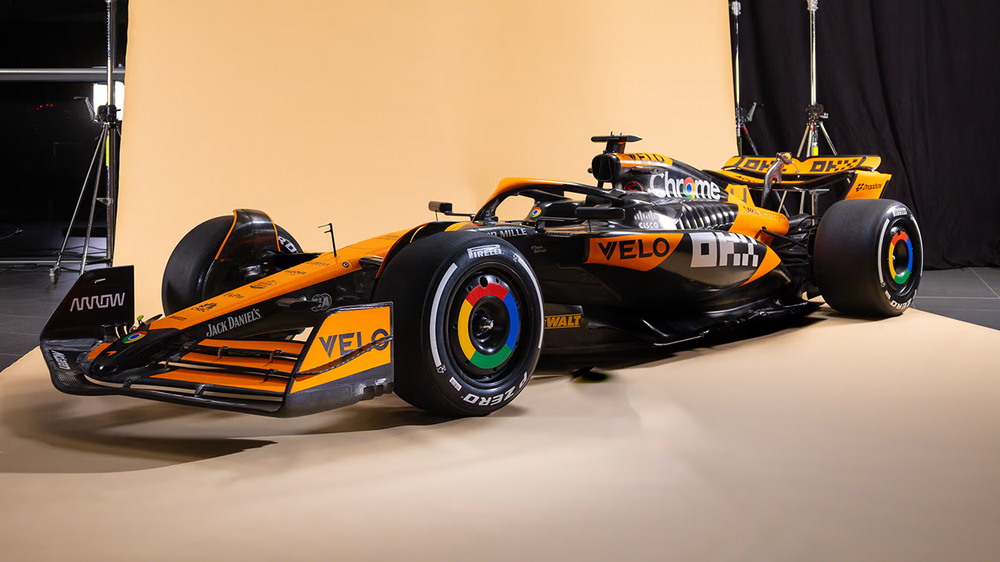
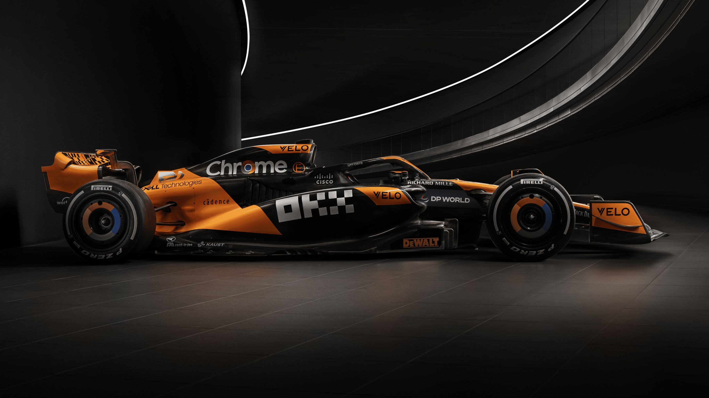
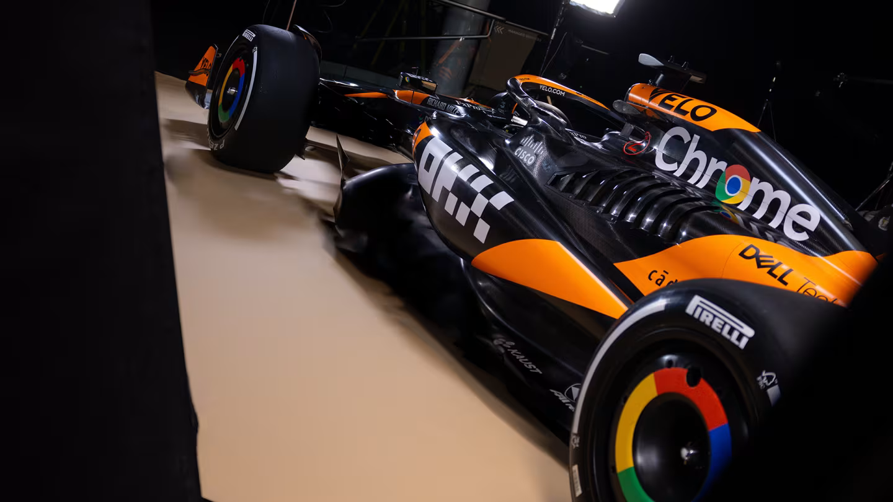

McLaren
Estatísticas
| Base | Woking, Reino Unido |
|---|---|
| Chefe de Time | Andrea Stella |
| Chefe Técnico | Peter Prodromou / Neil Houldey |
| Primeira Temporada | 1966 |
| Títulos Mundiais | 8 |
| Maior Resultado | 1 (x184) |
| Pole-Positions | 157 |
| Voltas mais Rápidas | 166 |
Pilotos


McLaren MCL38

- 
- 
- 
História
Fundação e Primeiros Sucessos: Fundada pelo piloto neozelandês Bruce McLaren, a equipe obteve suas primeiras vitórias significativas nas décadas de 60 e 70. Em 1974, Emerson Fittipaldi venceu o campeonato de pilotos e a McLaren conquistou seu primeiro título de construtores.
Anos 80 e 90: A McLaren teve uma era de ouro nos anos 80 e 90, com pilotos como Niki Lauda, Alain Prost, Ayrton Senna e Mika Häkkinen. Com a ajuda do projetista Gordon Murray e do fornecedor de motores Honda, a equipe dominou a F1, conquistando múltiplos títulos de pilotos e construtores.
Desafios e Recuperação: Após a saída de Senna e Prost, a equipe enfrentou desafios técnicos e mudanças de gestão. No entanto, continuou a ser uma força competitiva, com vitórias significativas, incluindo os campeonatos de Mika Häkkinen em 1998 e 1999.
Anos Recentes: A McLaren enfrentou dificuldades na última década, mas com novos investimentos e foco renovado, especialmente com a parceria com a Mercedes para fornecimento de motores, a equipe tem trabalhado para voltar ao topo, apresentando um desempenho crescente nos últimos anos.